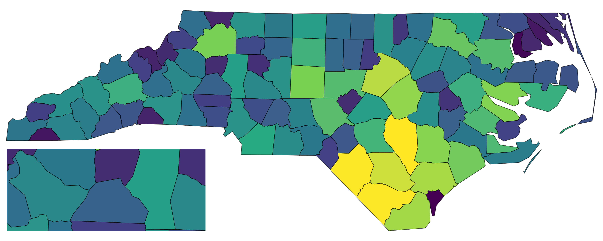

This vignette shows how to compose ggplot2 maps with insets using insetplot, with emphasis on runnable code.
Quick start
# 1) Configure the layout: one main map + one inset (nc loaded in setup)
config_insetmap(
data_list = list(nc),
specs = list(
inset_spec(main = TRUE),
inset_spec(
xmin = -82, xmax = -80.5, ymin = 35.5, ymax = 36, # bbox for the inset area
loc = "left bottom", # where to place the inset
scale_factor = 2 # size relative to main
)
)
)
# 2) Build a base plot (shared by main and inset unless a spec supplies its own)
base <- ggplot(nc, aes(fill = AREA)) +
geom_sf() +
scale_fill_viridis_c() +
guides(fill = "none") +
theme_void()
# 3) Compose
with_inset(base)
# 4) Save with correct aspect ratio (only width or height is needed)
# ggsave_inset("inset_map.png", width = 10)You can also provide custom plots per spec, then call
with_inset() without a plot argument.
For example, you may want to add some annotations to the inset(s) only.
main <- ggplot(nc, aes(fill = AREA)) +
geom_sf() +
scale_fill_viridis_c() +
guides(fill = "none") +
theme_void()
config_insetmap(
data_list = list(nc),
specs = list(
inset_spec(main = TRUE, plot = main),
inset_spec(
xmin = -82, xmax = -80.5, ymin = 35.5, ymax = 36,
loc = "left bottom", # where to place the inset
scale_factor = 2, # size relative to main
plot = main +
annotate("label", x = -80.5, y = 35.5, label = "Detail", size = 5, hjust = 1, vjust = 0, fill = "white", size.unit = "pt")
)
)
)
with_inset()Why insetplot (vs. using cowplot/patchwork directly)
But why not just use patchwork::inset_element() or
cowplot::draw_plot() directly? I’ll demonstrate this by the
following minimal example.
First, without insetplot, we should manually create the
inset plot by zooming into the desired bbox like this (I add borders to
plots for clarity):
inset_bbox <- c(xmin = -82, xmax = -80.5, ymin = 35.5, ymax = 36)
main_map <- ggplot(nc, aes(fill = AREA)) +
geom_sf() +
scale_fill_viridis_c() +
guides(fill = "none") +
theme_void() +
map_border(linewidth = 0.5)
inset_map <- main_map +
coord_sf(
xlim = c(inset_bbox["xmin"], inset_bbox["xmax"]),
ylim = c(inset_bbox["ymin"], inset_bbox["ymax"])
)Suppose we want to add the inset at the bottom-left corner with height 30% of the main plot.
Now, let’s try patchwork::inset_element(). Since, here,
we don’t know the correct aspect ratio, we might specify arbitrary
width/height for the inset.
# Manual insetting with patchwork: force a mismatched container ratio
main_map + patchwork::inset_element(
inset_map,
left = 0, bottom = 0, right = 0.3, top = 0.3, # arbitrary width/height
align_to = "panel"
)Inset via patchwork
And now cowplot::draw_plot():
Inset via cowplot
Thing will become much worse when you save the plots with different output apsect ratios. For example, if I save the above plot with a height-to-width artio of 1.0:
Inset via cowplot with wrong aspect ratio
You may get better results by adjusting the inset size manually based on visual inspection of the output plot.
Now let’s see how insetplot handles this more
gracefully.
config_insetmap(
data_list = list(nc),
specs = list(
inset_spec(main = TRUE),
inset_spec(
xmin = -82, xmax = -80.5, ymin = 35.5, ymax = 36,
loc = "left bottom", height = 0.3
)
)
)
# You even don't need to prepare `inset_map` here since insetplot handles it internally
with_inset(main_map)Inset via insetplot
Even you save this plot with a not-that-good aspect ratio, such as 1.0:
with_inset(main_map)
Inset via insetplot with wrong aspect ratio
And don’t forget that, in fact, you can always save it correctly with
ggsave_inset().
In short: insetplot calculates inset sizes from data aspect ratios
(via bounding boxes) and guides saving via ggsave_inset(),
so you avoid accidental stretching.
What each parameter means
Below are the key functions and their arguments, illustrated inline.
Define subplots (inset_spec)
# Define a main spec (no size/position needed)
inset_spec(main = TRUE)
# Define an inset by bbox + position + size
inset_spec(
xmin = -120, xmax = -100, ymin = 30, ymax = 50, # spatial extent (data CRS)
loc = "right bottom", # shorthand position on full canvas
width = 0.30 # size in [0,1]; prefer ONE of width/height
)
# Prefer scale_factor to size relative to main plot automatically
inset_spec(
xmin = -120, xmax = -100, ymin = 30, ymax = 50,
loc = "left bottom",
scale_factor = 0.5 # relative to main ranges
)inset_spec() arguments:
-
xmin,xmax,ymin,ymax: numeric bbox of the subplot in data coordinates. AnyNAis filled from overall extent. -
loc: convenience string “left|center|right bottom|center|top”. Ignored ifloc_left/loc_bottomgiven. -
loc_left,loc_bottom: numbers in [0,1] for precise bottom-left position on the canvas. -
width,height: numbers in (0,1]. Recommend providing only one; the other is inferred to preserve spatial aspect. -
scale_factor: number in (0,Inf) to size inset relative to main plot’s x/y ranges. Overrideswidth/heightwhen set. -
main: TRUE if this spec is the main plot (exactly one spec must be main). -
plot: optional ggplot for this spec; otherwise the shared base plot is used.
Configure layout (config_insetmap)
cfg <- config_insetmap(
data_list = list(nc), # list of sf objects used to compute extents/CRS
specs = list(
inset_spec(main = TRUE),
inset_spec(xmin = -84, xmax = -75, ymin = 33, ymax = 37, loc = "left bottom", scale_factor = 0.5)
),
crs = sf::st_crs("EPSG:4326"), # target CRS for coord_sf()
border_args = list(color = "black", linewidth = 1) # passed to map_border()
)config_insetmap() arguments:
-
data_list: list of sf objects; used to compute union bbox and main aspect ratio. -
specs: list ofinset_specobjects; exactly one must havemain = TRUE. -
crs: target CRS passed toggplot2::coord_sf(). -
border_args: style for inset borders viamap_border().
Compose the figure (with_inset)
out <- with_inset(base) # returns the composed plot
names(with_inset(base, .return_details = TRUE)) # list with full, subplots, layouts, main_ratio
#> [1] "full" "subplots" "subplot_layouts" "main_ratio"
# You can also provide custom plots after configuring
out <- with_inset(list(main_map, inset_map))
#> Coordinate system already present.
#> ℹ Adding new coordinate system, which will replace the existing one.with_inset() arguments:
-
plot: a single ggplot used for all specs, or a list of ggplots per spec, orNULLif every spec has its own plot. -
.cfg: the configuration to use (defaults tolast_insetcfg()). -
.as_is: return the input plot unchanged (handy for debugging/reuse). -
.return_details: return internals (layouts, subplots) instead of just the composed ggplot.
Save with the right ratio (ggsave_inset)
# Provide only width (or only height). The other dimension is computed to match the main ratio.
ggsave_inset("map.png", p, width = 10)ggsave_inset() arguments:
-
width/height: only one is needed; the other is calculated from the configuration’s main ratio. If both are given, output may not match the intended ratio. -
ratio_scale: optional multiplier if extra space is needed for legends/titles.